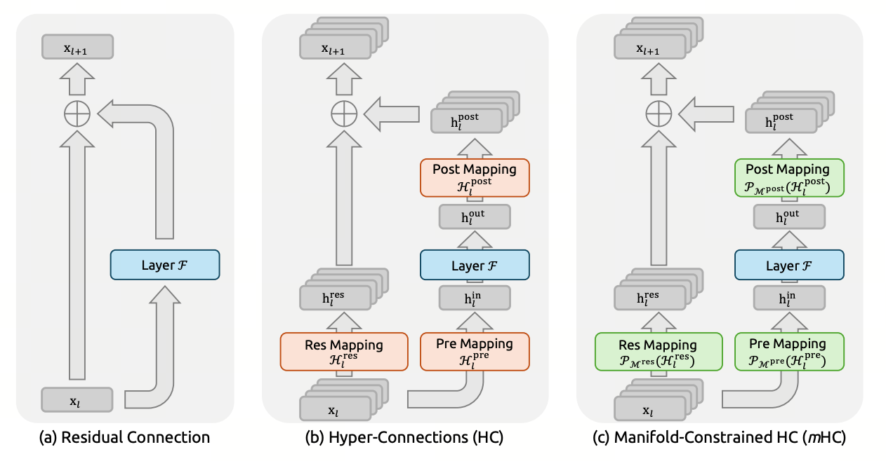

mHC — 残差通路的几何护栏
从"残差等于加法"到"残差等于带几何约束的矩阵混合"—— V4 把 60+ 层堆叠的稳定性问题搬到了流形上。
mHC = Manifold-constrained Hyper-Connection（流形约束的超连接）
把单条残差流扩展为 $n_{hc}$ 条并行流，再约束流间混合矩阵，使这部分线性变换保持非扩张。注意：约束针对残差混合路径，并不等于完整网络永远不会放大输入。
- 残差连接（Residual Connection）
- Transformer 中的 $x_{l+1}=x_l+F_l(x_l)$ 为梯度和信息提供直接路径。深度增加时，残差状态的尺度与不同分支的贡献可能更难控制，但不能笼统断言其范数会随层数单调上升。
- Hyper-Connection（HC，Zhu 2025）
- 把单条残差扩成 $n_{hc}$ 条并行残差流（V4 取 $n_{hc}=4$）。每层多三个学习矩阵 $A_l, B_l, C_l$ 控制"读哪几条流 / 把输出写到哪几条流 / 流之间怎么混"。表达力上去了，但 $B_l$ 无约束 ⇒ 稳定性反而更差。
- Manifold（流形）
- 这里特指双随机矩阵的 Birkhoff 多面体 —— 所有"元素非负、行和为 1、列和为 1"的方阵构成的集合 $\mathcal M$。它有两个救命性质：里头任何矩阵的谱范数 $\le 1$，且乘法封闭（俩双随机矩阵相乘还是双随机）。
- Constrained（受约束）
- 把每层学到的"未约束"矩阵 $\tilde B_l$ 用 Sinkhorn-Knopp 迭代 20 步可微地投影回 $\mathcal M$。"可微"是关键 —— 反向传播能直接穿过去，整个 mHC 端到端可学。

1. 深层残差为什么需要更细的尺度控制
标准残差连接 $x_{l+1}=x_l+F_l(x_l)$ 很有效，但在深层模型中仍要关注三个问题：
- 尺度累积：不同层的分支输出可能同向叠加，也可能相互抵消；若缺少约束，残差状态尺度可能逐步漂移。
- 层贡献失衡：当残差主干尺度远大于新分支输出时，后续层的相对贡献可能变小。
- 异常值传播：恒等残差路径会保留已有异常值，但它不是异常值产生的唯一原因。
V4 报告称普通 Hyper-Connection 在训练中表现出数值不稳定，因此采用 mHC；报告没有把这一现象具体归因于上述标准残差示意，也没有公布所谓“V4-Pro 早期实验”的细节。
2. Hyper-Connection（Zhu 2025）：把残差从向量扩成矩阵
核心想法：与其只有一条残差流（宽度 $d$），不如同时维护 $n_{hc}$ 条并行残差流（每条宽度 $d$），把整个 state 写成矩阵 $X_l \in \mathbb{R}^{n_{hc} \times d}$。每层引入三个学习矩阵 $A_l, B_l, C_l$ 控制流之间的读写：
每个矩阵的形状与角色：
| 符号 | 形状 | 角色 | V4 取值（$n_{hc}=4, d=7168$） |
|---|---|---|---|
| $X_l$ | $n_{hc} \times d$ | 第 $l$ 层的"残差流矩阵"，$n_{hc}$ 条并行 highway | $4 \times 7168$，每个 token 多带 4 份隐藏状态 |
| $A_l$ | $1 \times n_{hc}$ | 读：把 $n_{hc}$ 条流加权平均成单个 $d$-向量喂给 block | $1 \times 4$，4 个权重 |
| $F_l$ | $d \to d$ | 第 $l$ 层的实际计算（attention 或 FFN） | 原本 Transformer block 不变 |
| $C_l$ | $n_{hc} \times 1$ | 写：把 block 输出分发回 $n_{hc}$ 条流 | $4 \times 1$，4 个权重 |
| $B_l$ | $n_{hc} \times n_{hc}$ | 混合：流之间的相互交换矩阵 | $4 \times 4 = 16$ 个权重 |
$X_{l+1} = B_l X_l + C_l F_l(A_l X_l)$ 翻成大白话就是三步：
- 读：$A_l X_l$ —— 从 4 条 highway 上各取一点料，混成一份"输入"喂给本层 attention/FFN；
- 算：$F_l(\cdot)$ —— 本层正常计算，输出仍是 $d$ 维向量；
- 写 + 混合：$C_l \cdot \text{(输出)} + B_l X_l$ —— 一边把新结果按 $C_l$ 分发到 4 条流，一边按 $B_l$ 把旧的 4 条流重新"换道"打包。
整个过程比标准残差多了三个旋钮：选择从哪几条流读、写到哪几条流、流之间怎么换道。模型可以学会"这一层我把 outlier 关在第 3 条流里别让它污染主流"这种策略。
$n_{hc}$ 在 V4 中取 4。多条 residual stream 通过 $A_l$、$B_l$、$C_l$ 进行读入、混合与写回；报告没有把某一条流指定为长程或局部通道。
3. 但 HC 自己仍会"原地爆炸"
HC 的稳定性问题集中在 $B_l$。它是一个无约束的 $n_{hc} \times n_{hc}$ 矩阵，所有层堆起来后，从输入到输出的残差通路总变换是 $B_L \cdots B_2 B_1$。
定量看：
- 如果每层平均 $\|B_l\|_2 = 1.05$（仅高出 5%），60 层乘下来 $\|\prod B_l\|_2 \le 1.05^{60} \approx 18\times$ —— 残差路径放大 18 倍；
- 如果某些 $B_l$ 学出大的负值，相邻层流之间出现强相消，信息被洗掉；
- 训练初期 $B_l$ 几乎随机，谱半径分布很宽 —— 训练前几千步极其不稳。
V4 报告明确指出普通 HC 存在数值不稳定，而 mHC 的目标是约束这一流间混合路径。
拖滑条调整教学模型中“每层无约束 mixing 的谱范数”。红线按最坏方向始终对齐的假设画出 $\|B\|^L$，绿线表示每层 mixing 矩阵谱范数不超过 1 时的上界。1.05 连乘 60 层约为 18.7，只用于展示小幅逐层放大的累积效应；论文没有报告 V4-Pro 曾以这一数值失稳，也不能把它视为真实训练曲线。
4. mHC 的核心约束：把 $B_l$ 关进 Birkhoff 多面体
mHC（Manifold-constrained HC, Xie 2026）的关键一步：强制 $B_l$ 落在双随机矩阵的 Birkhoff 多面体上：
这个约束的含义拆开来看：
- $M_{ij} \ge 0$：每个流给下一层各流的"权重"都是非负的，禁止相消；
- $M\mathbf{1} = \mathbf{1}$：每行和为 1，每条流"分给"出去的总权重是 1，不放大；
- $\mathbf{1}^{T}M = \mathbf{1}^{T}$：每列和为 1，每条新流"接收"的总权重是 1，不浓缩。
反例：把右下角改成 1.5，行和与列和都被破坏，矩阵不再双随机，谱范数也可能超过 1。
- 谱范数恒 $\le 1$：由 Birkhoff–von Neumann 定理，双随机矩阵 = 置换矩阵的凸组合。所有置换矩阵谱范数为 1，凸组合的谱范数 $\le 1$。所以 $\|B_l\|_2 \le 1$，$\|\prod B_l\|_2 \le 1$ 无论堆多深。
- 矩阵乘法下闭合：双随机矩阵的乘积仍为双随机矩阵，因此只考虑 $B_l$ 的累积残差混合时，其谱范数不会随深度指数放大。
几何直观：把 4 条 highway 看作 4 路信号，$B_l$ 负责重新分配各路权重。双随机约束保持行列归一，并让该线性映射的谱范数不超过 1。这个类比只描述 $B_l$；非线性分支 $C_lF_l(A_lX_l)$ 仍会向状态写入新信号。
$A_l, C_l$ 的处理：
- $A_l$ 用 $\mathrm{Sigmoid}$ 投到 $(0, 1)^{n_{hc}}$ —— 读流时禁止负权重，避免主信号被异号项相消；
- $C_l$ 用 $2\cdot\mathrm{Sigmoid}$ 投到 $(0, 2)^{n_{hc}}$ —— 写入流时给稍宽的动态范围，让 block 贡献能"压过去"。
5. 动态 + 静态参数化：让约束矩阵随上下文走
如果 $B_l$ 是固定的可学习参数，每层只有一个 $B_l$，它不能根据当前 token 调整流间路由。mHC 把它分解成静态 + 动态两部分：
每个符号：
- $\hat{X}_l$：当前层 RMSNorm 后的输入；
- $W^{\text{res}}_l$：把 $\hat{X}_l$ 投到 $n_{hc}^2$ 维的矩阵，$\mathrm{Mat}(\cdot)$ 把这个向量 reshape 成 $n_{hc} \times n_{hc}$；
- $\alpha^{\text{res}}_l$：可学习的标量系数，控制"动态部分"的权重；
- $S^{\text{res}}_l$：可学习的静态 $n_{hc} \times n_{hc}$ 矩阵，提供"默认混合模式"。
这条公式可以理解成"默认换道地图 + 一份按 token 微调"：
- $S^{\text{res}}_l$ 是地图：每层有一份固定的"4 条 highway 默认怎么换道"，训练初期主要靠它，模式简单稳定；
- $\hat X_l W^{\text{res}}_l$ 是实时路况：根据当前 token 内容动态生成一个补丁矩阵；
- $\alpha^{\text{res}}_l$ 是音量旋钮：训练初期取 ≈0.1，地图占主导；后期 $\alpha$ 学大，按 token 调整变得重要。
这种"先打地基再加上层建筑"的参数化，是双阶段训练稳定性的核心 —— 模型不会在第 0 步就被一个随机大动态项推飞。
$A_l, C_l$ 也用同样的动态+静态分解，公式形状相同，只是输出维度变成 $1\times n_{hc}$ 和 $n_{hc}\times 1$。
6. Sinkhorn-Knopp：把任意正矩阵打回多面体
$\tilde{B}_l$ 经过上述参数化后只是个普通矩阵，怎么可微地投到 Birkhoff 多面体上？mHC 的做法：
- 先取 $\exp(\tilde{B}_l)$，保证非负；
- 用 Sinkhorn-Knopp 迭代交替归一化行与列，20 步收敛到双随机矩阵。
其中 $\mathcal{T}_r$ 是行归一化（每行除以行和），$\mathcal{T}_c$ 是列归一化（每列除以列和）。
Sinkhorn-Knopp 干的事就两件，反复轮流：
- 把每一行除以它的行和 ⇒ 行和都变成 1（但列和被打乱）；
- 把每一列除以它的列和 ⇒ 列和都变成 1（但行和又被打乱了一点点）。
每轮两边都被"打乱"得越来越轻，20 轮后行和列和都 ≈ 1，这就是双随机。重要的是这两步都是可微的元素级除法，autograd 能正常穿过去 —— 整个 mHC 仍然端到端可训。
初始矩阵是随机正矩阵（模拟 $\exp(\tilde B_l)$ 的输出）。每按“下一步”交替做一次行、列归一化。该示例只展示 Sinkhorn–Knopp 的收敛过程；收敛速度取决于输入矩阵，不能用单次随机演示解释为什么报告配置取 20 次迭代。
经典定理（Sinkhorn 1964）：任何全正矩阵在交替行列归一化下都收敛到双随机矩阵，且收敛是线性的（每次误差缩小 $\sim$ 常数比例）。 对 $4 \times 4$ 矩阵，10 步内残差就能降到 $10^{-4}$；20 步是充足的安全边界。
为什么不用 Hungarian 算法（求最优排列）？ 因为它给出离散的硬置换，不可微，反向传播无法穿过它。Sinkhorn 是这个分配问题的软可微版本 —— 这也是它在 OT、attention sinkformer、RL 等领域被广泛使用的原因。
7. 代价 / 还没解决的问题
- Sinkhorn 计算开销：配置使用 20 次 $4\times4$ 矩阵的行列归一化；矩阵本身很小，但 mHC 还会增加 activation memory 与流水通信，不能只按这几次标量运算判断整体开销。
- 表达力损失：双随机 $4\times 4$ 矩阵构成 9 维流形（无约束是 16 维）。理论上表达力下降，但实测 loss 曲线不显著变化，反而稳定性大幅改善。
- 只约束了流间混合，没约束 $F_l$ 本身：mHC 的双随机约束作用于残差混合矩阵，不等于整个 block 的输出都被严格限幅。报告另行采用 SwiGLU Clamping 与 Anticipatory Routing 处理训练稳定性问题，但没有用消融证明它们与 mHC 构成一一对应的“兜底”关系。
- $n_{hc}$ 的配置：V4 取 $n_{hc}=4$。更大的扩展因子会增加残差状态、映射和通信成本，但报告没有给出 4 与其他取值的消融或“平衡点”结论。
HC 将单条残差扩展为 $n_{hc}$ 条流，并以 $A_l$、$B_l$、$C_l$ 控制读、混合与写入。mHC 对这些映射施加约束，其中双随机 $B_l$ 的谱范数不超过 1，且其乘积仍保持非扩张。该保证不覆盖完整非线性层。V4 使用 20 步 Sinkhorn-Knopp，并通过融合与重计算将 mHC 的流水线 wall-time 开销控制在 6.7%。
shape n_hc × d"] --> Norm["RMSNorm + flatten"] Norm --> Aw["A_l 通道"] Norm --> Bw["B_l 通道"] Norm --> Cw["C_l 通道"] Aw -- "Sigmoid" --> A["A_l ∈ (0,1)"] Cw -- "2·Sigmoid" --> C["C_l ∈ (0,2)"] Bw -- "exp" --> Bp["正矩阵"] Bp -- "Sinkhorn-Knopp ×20" --> B["B_l ∈ Birkhoff"] A --> F["Layer F_l"] F --> C C --> Add(("+")) X --> B B --> Add Add --> Xn["X_(l+1)"] classDef key fill:#71a4e1,stroke:#71a4e1,color:#fff class B,A,C key
图 3-2 · mHC 的动态参数化流程。Sinkhorn-Knopp 是把残差矩阵"打回流形"的关键一步，保证累积变换的谱范数永远 $\le 1$。